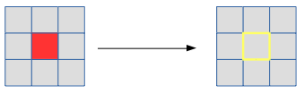
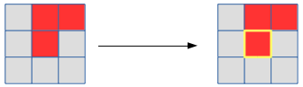
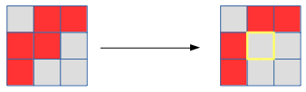
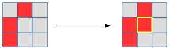

Here are the rules:
1. Any live cell with fewer than two live neighbours dies, as if caused by under-population.
2. Any live cell with two or three live neighbours lives on to the next generation.
3. Any live cell with more than three live neighbours dies, as if by overcrowding.
4. Any dead cell with exactly three live neighbours becomes a live cell, as if by reproduction.
This just shows the lifecycle of the cell in the centre. The pattern on the right would generally be different as the other cells in the pattern are also evolved at the same time.